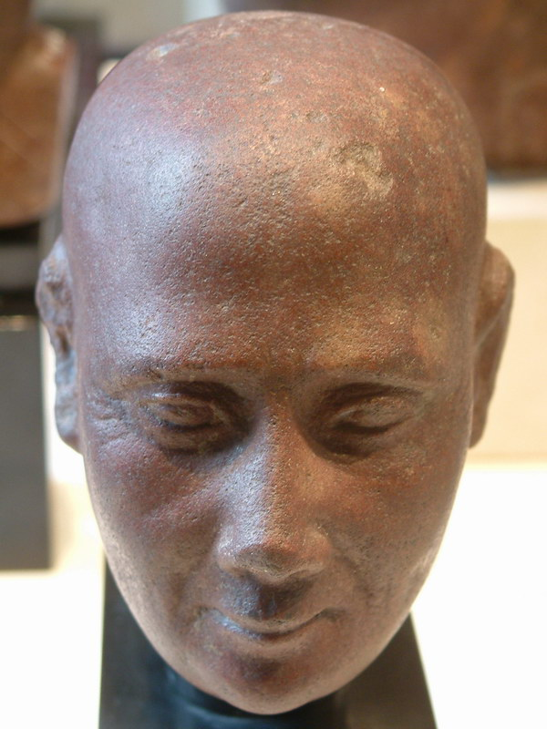
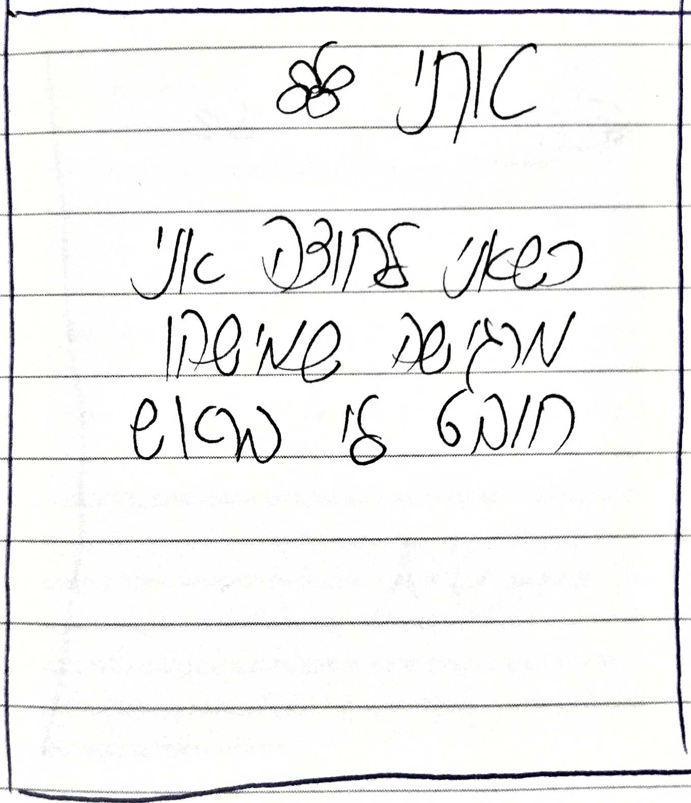
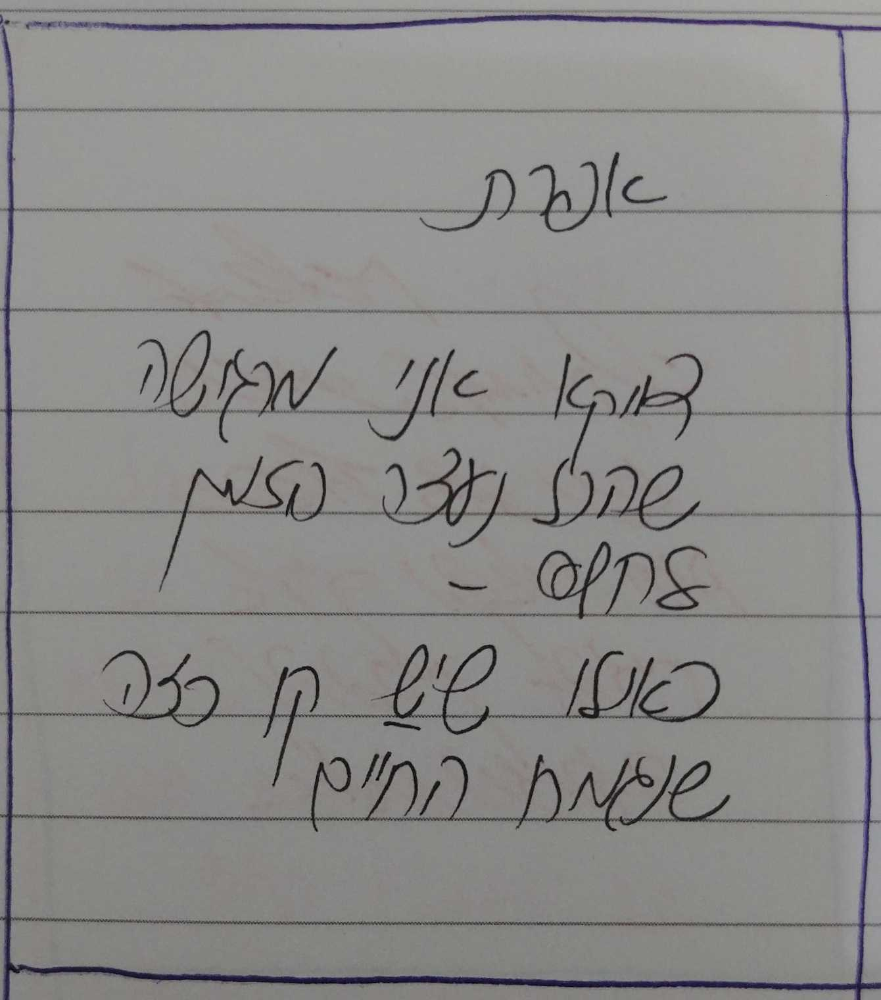
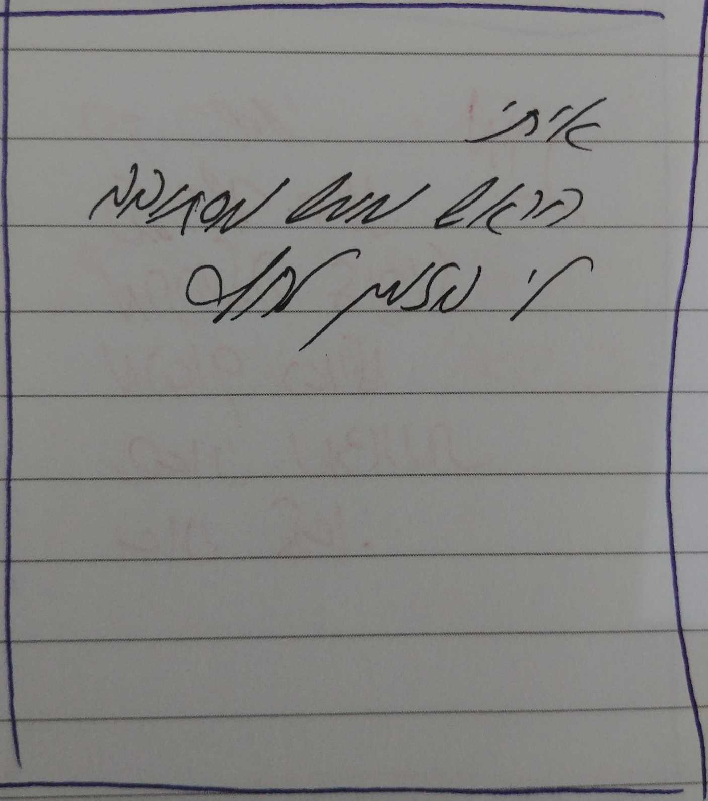

הראש כולו
ראש הוא האזור החשוב בגוף אדם או בעל חיים. הוא בדרך כלל בעל צורה מעוגלת או מאורכת, וממוקם בחלק העליון בגוף.
הראש בנוי ממערכת של עצמות שטוחות חזקות מאוד (גולגולת) ובתוכו נמצא המוח.
תפקידה של הגולגולת הוא הגנה על המוח. בנוסף למוח, נמצאים בו, בדרך כלל,
רוב איברי החישה של היצור, כגון האף עבור חוש הריח, אוזניים עבור חוש השמיעה, עיניים עבור חוש הראייה וחלקי הפה עבור חוש הטעם.
אצל האדם, הראש מכוסה בשיער רב, לעומת שאר הגוף, שבדרך כלל אינו מכוסה בשיער או שיש בו שיעור דליל מאוד.



